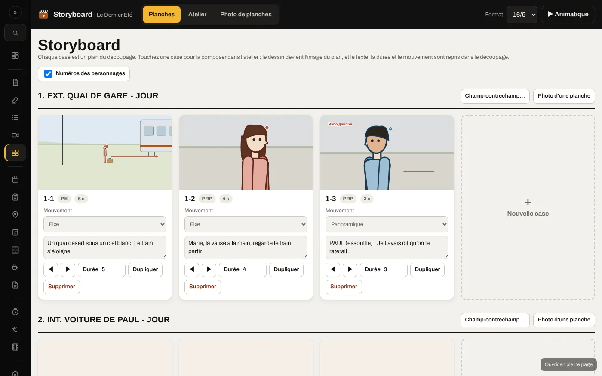
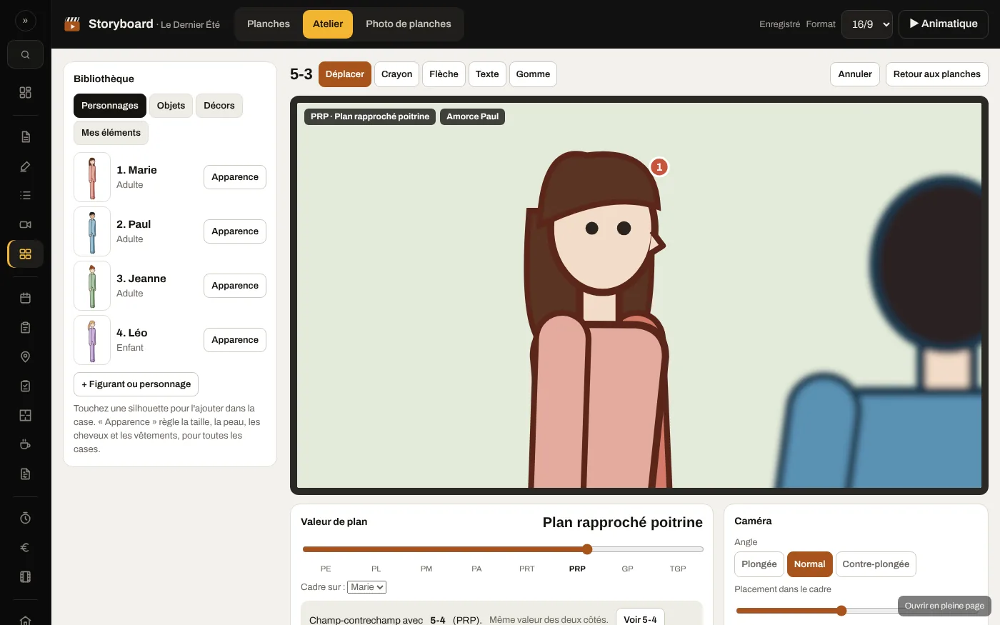
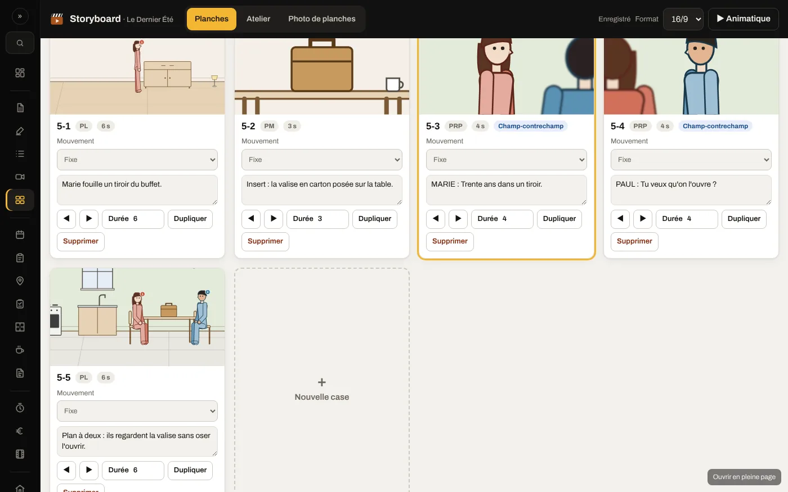
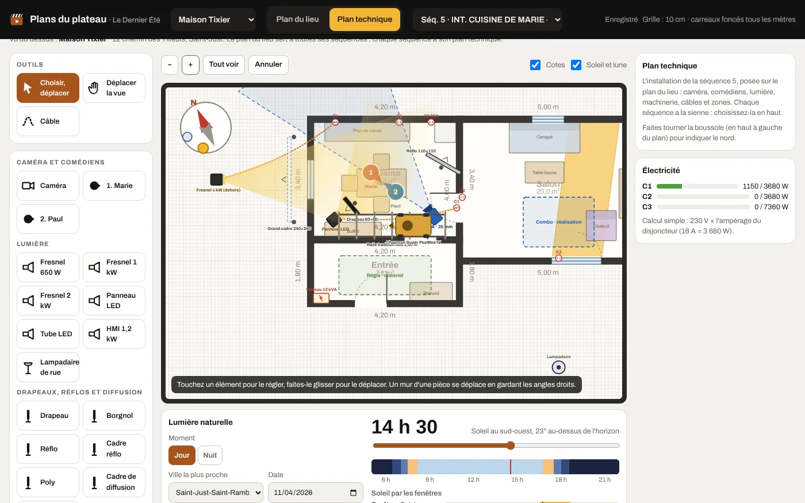
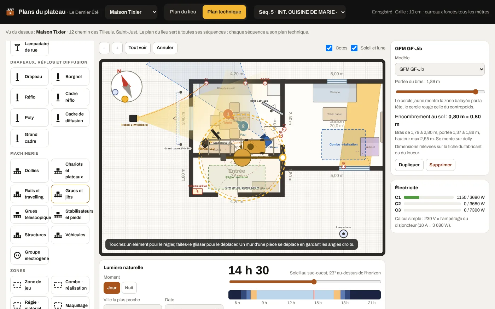
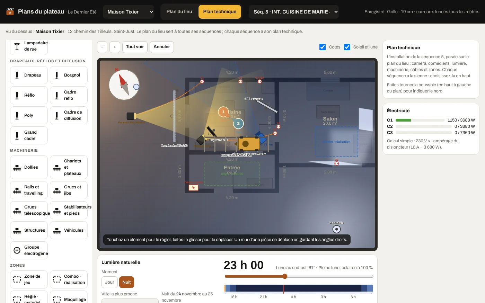

CinéLabs 0.25.1
Nouvelle apparence et mode sombre. Vue d'ensemble du projet avec ce qu'il faut surveiller. Plan de travail en frise. Mode plateau pour la tablette. Recherche rapide avec Ctrl+K.
Feuille de route
CinéLabs avance par petites versions, une nouveauté importante à la fois. L'ordre peut changer selon vos retours : ce qui bloque un tournage passe toujours en premier. Le logiciel vous prévient lui-même quand une nouvelle version sort.
Les démarches avant le tournage, réunies au même endroit.
Dessiner ses plans sans savoir dessiner, puis voir comment tout tient dans le décor.






Tout ce qu'il faut pour le DCP et les festivals, sans imposer de logiciel.
Ce qui bloque un tournage passe toujours avant le reste : chaque version corrige aussi ce que vous nous signalez.
CinéLabs fonctionne aujourd'hui sous Windows 10 et 11. La version Mac viendra ensuite, avec les mêmes projets.
Chacun depuis chez soi, sur le même projet. En attendant, un projet s'envoie déjà en un seul fichier .cinelabs.
Dites-nous ce qui vous manque sur vos tournages : ce sont vos retours qui décident des prochaines versions. Venez en parler dans le salon #idées du Discord, ou écrivez-nous.
Historique
Chaque version, avec ce qu'elle a apporté. Pour mettre à jour, téléchargez la dernière depuis l'accueil : vos projets sont conservés.
Nouvelle apparence et mode sombre. Vue d'ensemble du projet avec ce qu'il faut surveiller. Plan de travail en frise. Mode plateau pour la tablette. Recherche rapide avec Ctrl+K.
Un premier lancement guidé, avec un projet d'exemple pour tout essayer sans risque. « Premiers pas » dans chaque projet. Envoyer un projet complet dans un seul fichier .cinelabs et l'ouvrir sur un autre ordinateur.
Un lien vers le serveur Discord de CinéLabs.
CinéLabs prévient quand une nouvelle version sort. Nouveau bouton « Signaler un problème ». Liens vers le site et la page de soutien.
Première version publique et gratuite. Format d'image et de son du film, storyboard au format du film.